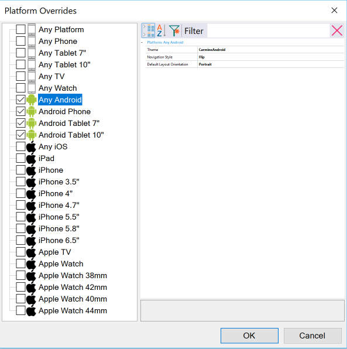

Sets Theme, Navigation Style, and Orientation values for an application other than the default ones. Scope Objects: Menu, Panel, Work With (Only Main Objects) Description
Sometimes, in a Knowledge Base is needed to have different Smart Devices applications and set different configurations for them in the same platform, i.e., Slide navigation style is needed for Application1 and Flip for Application2, both in Android platform. Navigation Style, Theme and Default Layout Orientation are properties specific for the Smart Device Platforms. If different values are needed for one of these properties, in different applications in the same Knowledge Base, Platform Override property dialog, of the application Main object, has to be used.  Notes:
Run-time/Design-timeThis property applies only at design-time. How to apply changes
AvailabilityThis property is available since GeneXus 16 upgrade 2. See Also
|